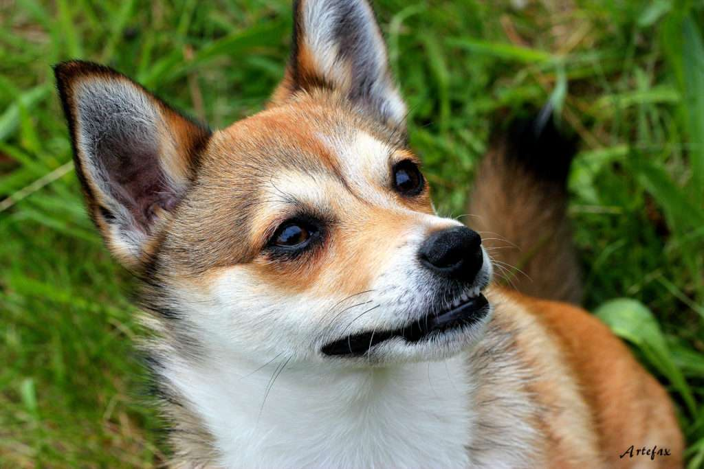

Los perros de tamaño medio o mediano son perfectos, ya que pueden adaptarse a diferentes hogares, ya sea en pisos o casas, sin que ello afecte a su bienestar. En esta página encontrarás muchos perros con características bien distintas: peludos, de pelo corto, de pelo largo, para niños, tranquilos, activos, inteligentes, atléticos, pequeños, grandes, bonitos... Encuentra al mejor amigo ideal entre las razas de perros medianos que te mostramos en esta lista con los nombres de todas las razas de perros medianos y con fotografías. ¡Descubras al que más se adapta a ti! Recuerda que deberás informarte bien acerca de sus necesidades de energía o el clima aconsejable que requiere cada uno de ellos antes de adoptar.
Si llegas a estar viendo esta pagina quiere decir que està todo bien hecho. :)
ESTOS SON NUESTROS FAVORITOS:

Perro de Agua Portugues:

En esta ocasion vamos a hablar del perro de agua portugués o, en otras palabras, el Cao de agua
Portugueish (así se dice en portugues y al mismo tiempo se ve lindo por aca).
Este precioso can se puede parecer en algunos aspectos al perro de aguas español, al que puede que estemos mas
habituados, sin embargo, una serie de diferencias con respecto a ese perro.
Por ello, a continuacion
motraremos como es el perro de agua portugues y asi desentrañar todos los secretos para descubrir al perro que
acompañaba a los marineros portugueses desde antes del siglo XV. Sigue Leyendo y descubre las caracteristicas del
perro de agua Portugues!

Caracteristicas:
- Perro apto para dueños con experiencia
- Se requiere algo de adiestramiento
- Le gustan los paseos energicos
- Babeo minimo
- Raza hipoalergenica
- expresivo y ladrador
- Guardian y atento
- Puede necesitar adiestramiento para vivir con otras mascotas desde cachorros
Otros datos:
- Adulto: 10 - 25 kg.
- Esperanza de vida: 12 - 14.
- Altura (cm): 45 - 55.
- Actividad fisica recomendada: Alta.
Lounderhund
El lunderhund Noruego es una raza de perros spitz proveniente de Noruega. Es conocido como "Perro frailecillo" debe su nombre a su gran habilidad por cazar frailecillos en espoacios donde no era muy facil llegar como acantilados o terrenos empinados, sus fuertes garras le permitian acceder a esos lugares. Esta raza es mas pequeña que las demas nombradas pero sus condiciones atleticas hacen que sea considerada una de las mas veloces de la tierra.
En este enlace puede encontrar mas informacion sobre este pewi.
Otros Perros Similares:
Cómo conseguir un Lundehund Noruego
Se trata de un perro tan excepcional como complicado de conseguir. Tendrías que ponerte en contacto con los criadores noruegos para poder conseguirlo, pero si te animas, no dudes en inrformarnos porque este que escribe está con ganas de conocer uno en persona.
Otros perros similares:
- Perro de osos de Carelia
- Spitz Finlandés
- Cazador de alces noruego gris
- Laika de Siberia Occidental
- Laika Ruso-Europeo
- Perro cazador de alces sueco
- Spitz de Norrbotten
Ejemplo de perro cazador de alces sueco:
![Cusquito]()